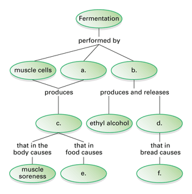
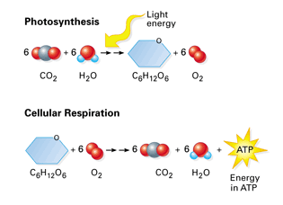
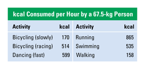

Reviewing Concepts
Multiple Choice
Choose the letter of the best answer.
1. Heterotrophs are also called
a. producers.
b. autotrophs.
c. consumers.
d. "self-feeders."
2. What are the waste products of cellular respiration?
a. carbon dioxide and water
b. ATP and ADP
c. carbon dioxide and oxygen
d. energy and glucose
3. What metabolic stage is part of both cellular respiration and fermentation?
a. electron transport
b. glycolysis
c. Krebs cycle
d. ATP synthase action
4. What is the net gain of ATP molecules produced directly by glycolysis?
a. 2
b. 4
c. 34
d. 38
5. Electron transport occurs in the
a. cytosplasm.
b. matrix of the mitochondria.
c. outer membrane of the mitochondria.
d. inner membrane of the mitochondria.
6. Which molecule accepts electrons from the final carrier in the electron transport chain?
a. NAD
b. pyruvic acid
c. oxygen
d. carbon
7. Which of the following molecules is not involved in fermentation?
a. glucose
b. pyruvic acid
c. NADH
d. oxygen
Short Answer
8. Explain why it can be said that most of life on Earth is solar-powered.
9. Describe what happens to the chemical energy in food that is not converted to useful cellular work.
10. How could you measure the calorie content of a peanut in the laboratory?
11. Describe how energy is stored in an ATP molecule.
12. What are the three main types of cellular work? Give an example of each.
13. Summarize the steps of glycolysis.
14. Which stage of cellular respiration uses oxygen directly to extract chemical energy from organic compounds? Explain the steps in this stage.
15. Compare and contrast fermentation that occurs in human muscle cells and in yeast cells.
Visualizing Concepts
16. Fill in the missing spaces in this fermentation concept map.

Applying Concepts
Analyzing Information
17. Analyzing Diagrams Use the diagram below to answer the questions.
a. What are the chemical reactants in photosynthesis? What are the chemical products?
b. What do the double arrows in each reaction indicate?
c. How are photosynthesis and cellular respiration related? How are they different?

18. The data table below lists the kilocalories (kcal) needed for various activities. Refer to the table to answer the questions that follow.
a. How many hours would a 67.5-kg person have to walk to use up the energy contained in a cheeseburger containing 430 kcal?
b. How far would this person have walked if he were walking 3 km per hour?
c. What form of exercise would use up the cheeseburger's calories in the shortest amount of time? Explain your answer.

Critical Thinking
19. Relating Cause and Effect Red blood cells do not contain mitochondria. Which stage or stages of sugar breakdown can take place in these cells? Explain your answer.
20. Comparing and Contrasting How is the process by which your body extracts energy from food similar to how a car's engine extracts energy from fuel? How is it different?
21. Making Generalizations Explain the following statement: Heterotrophs depend on autotrophs for energy.
22. What's Wrong With These Statements?
Briefly explain why each statement is inaccurate or misleading.
a. Plants carry out photosynthesis and animals carry out cellular respiration.
b. ATP traps most of the energy released from food during the Krebs cycle.
c. While sprinting, your muscle cells stop cellular respiration and switch to fermentation to produce ATP.
Performance Assessment
Design an Experiment Choose a variable that might affect fermentation in yeast or bacteria. For example, you might choose to study the effect of the concentration of sugar available to the fermenting cells. Develop a hypothesis about the effect of this variable. Then design a controlled experiment to test your hypothesis. Be sure to check with your teacher before conducting any experiments.